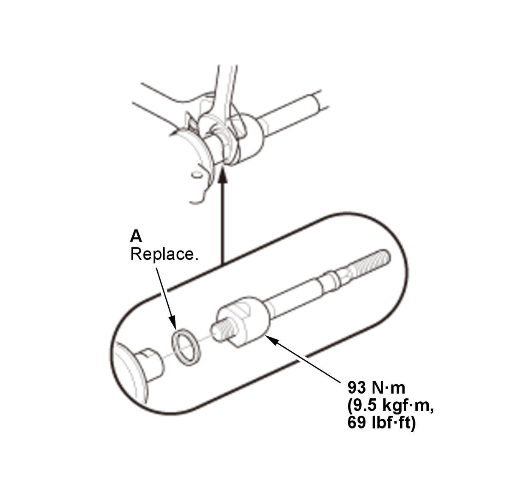

Steering Rack End Removal and Installation: Installation
NOTE: Do not allow dust, dirt, or other foreign materials to enter the steering gearbox.
- Rack End - Install
1. Hold the gearbox housing using a C-clamp (A) and wooden blocks (B) to a workbench as shown.
NOTE:- Do not clamp the cylinder part of the gearbox housing in a C-clamp.
- Be careful not to damage the mounting surface with a C-clamp.

Courtesy of HONDA, U.S.A., INC.2. Install a new rubber stop (A). 3. Tighten both rack ends with the wrench.
NOTE: Be careful not to damage the rack surface with the wrench.
4. Apply multipurpose grease to the boot grooves (A). - Rack End Boot - Install
1. Install the boot (A) on the rack end with the tie-rod clip (B). 2. Fit the boot end in the installation grooves in the housing properly.
3. After installing the boot, wipe the grease off the threaded section (C) of the rack end.
4. Install the new boot band (A) by aligning the tab (B) with the hole (C) on the band. 5. Close the ear portion (A) of the boot band (B) with pincers Oetiker 1098, commercially available or equivalent (C). - Tie-Rod End - Install
- Steering Gearbox - Install